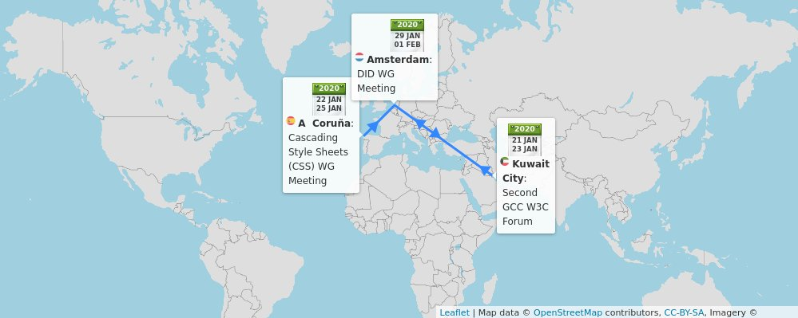

14 Jan: new @w3cx course session on #HTML5 Apps and Games. Learn advanced HTML5 tips and techniques to create great content such as #apps and #games! @edXOnline @micbuffa
Enroll now: https://cards.twitter.com/cards/18ce53z7ril/7anyh
🗓️ January@w3c: W3Cx courses, f2f meetings, and more: https://www.w3.org/participate/eventscal.html, and Happy New Year!
https://twitter.com/w3cdevs/status/121418233475441459822-24 Jan.: The @csswg meets f2f in #Coruna 🇪🇸, hosted by @igalia. See their agenda in https://wiki.csswg.org/planning/galicia-2020
https://twitter.com/w3cdevs/status/121418403823319040128 Jan.: 🆒🆕 @w3cx "Introduction to Web Accessibility #MOOC" starts! Enrollment is open on @edXOnline: https://www.edx.org/course/web-accessibility-introduction #accessibility #a11y
https://twitter.com/w3cdevs/status/121418404103502643229-31 Jan.: The Decentralized Identifiers (DID) #WorkingGroup meets @microsoft's #Amsterdam offices 🇳🇱. See the meeting agenda and more in their planning page: https://www.w3.org/2019/did-wg/Meetings/F2F/2020.01.Amsterdam
https://twitter.com/w3cdevs/status/1214184043413213184Congrats to @cssrossen (@microsoft), @davidbaron (@mozilla) and @kennethrohde (@intel) for their election to the @tag 👏👏👏
https://twitter.com/w3c/status/1216676024563511296
This is the result of an election started last month: https://twitter.com/w3cdevs/status/1204018699902038018
https://twitter.com/w3cdevs/status/1216676571492253700As a reminder, the @tag (@w3c's Technical Architecture Group) serves #developers interests by driving consistent Web #design principles. Learn more: https://twitter.com/w3cdevs/status/957974903122219008
https://twitter.com/w3cdevs/status/1216676581684449283Find out how these 2 methods (canMakePayment and hasEnrolledInstrument) work when using the Payment Request #API by @ibjacobs @w3payments #payments https://twitter.com/w3c/status/1218202163807125505
https://twitter.com/w3cdevs/status/1219300256380223488